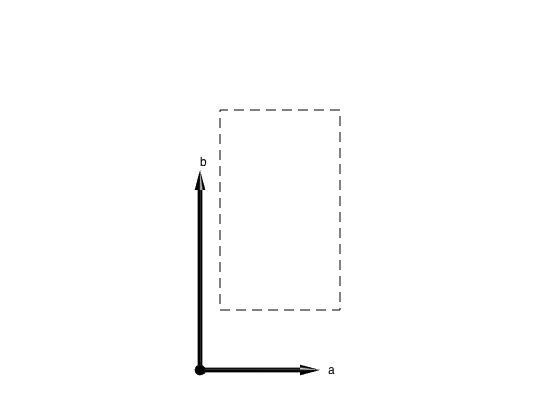

SW Class
Contents
To perform calculation using the SpinW library, we need to create an object (sw class type). It stores all the necessary parameters for the calculation (crystal structure, interactions, magnetic structure, etc.). In the object oriented programming dictionary, the data stored in an object, are called properties. Beside the data, the object also has assigned functions that perform different computations on the object data. These functions are called methods and they take the object as first input argument. To create an sw class object you can simply type:
model1 = sw
sw object (symbolic: off, symmetry: on, textoutput: "stdout")
lattice
angle: [1x3 double]
lat_const: [1x3 double]
sym: [1x1 integer]
unit_cell
r: [3xnAtom double] nAtom=0
S: [1xnAtom double]
label: [1xnAtom char]
color: [3xnAtom integer]
twin
vol: [1xnTwin double] nTwin=1
rotc: [3x3xnTwin double]
matrix
mat: [3x3xnMat double] nMat=0
color: [3xnMat integer]
label: [1xnMat char]
single_ion
aniso: [1xnMagAtom integer] nMagAtom=0
g: [1xnMagAtom integer]
field: [1x3 double]
T: [1x1 double]
coupling
dl: [3xnBond integer] nBond=0
atom1: [1xnBond integer]
atom2: [1xnBond integer]
mat_idx: [3xnBond integer]
idx: [1xnBond integer]
mag_str
N_ext: [1x3 integer]
k: [1x3 double]
S: [3xnMagExt double] nMagExt=0
n: [1x3 double]
unit
kB: [1x1 double]
muB: [1x1 double]
Properties
The output of the previous command shows all the data fields of model1. Each data field has an initial value and any of them can be modified directly:
model1.lattice.lat_const = [3 5 5];
The above command directly modifies the lattice parameters of the lattice. Modifying propoerties directly is quick and very flexible but prone to error. The most common mistake is that the new values are not the same data type as the original ones. For example the field that stores the lattice space group is integer type:
class(model1.lattice.sym)
ans = int32
Thus if we want to change it directly, we need an integer number:
model1.lattice.sym = int32(5);
This will change the crystal space group to 'C 2'. To avoid most common mistakes, there are several methods (functions) for modifying the above properties that also perform additional error checking and makes certain input conversions. For example all lattice related properties can be modified using the genlattice() function:
model1.genlattice('lat_const',[3 5 5],'sym','C 2','angled',[90 90 90])
The alternative usage of the above function is the following:
genlattice(model1,'lat_const',[3 5 5],'sym','C 2','angled',[90 90 90])
This reflects better the input argument structure. The first argument is the sw object 'model1'. After the first argument comes option name and value pairs. The first options is 'lat_const' and the value it expects is a vector with 3 elements if the input vector has different length, the function throws an error. The second option is 'sym' that also accepts string input (name of the space group) that is automatically converted to the index of the space group and stored in model1:
model1.lattice.sym
ans =
5
The last option is 'angled' that requires a vector with three elements and defines the alpha, beta, gamma lattice angles in degree. This will be converted into radian and stored:
model1.lattice.angle
ans =
1.5708 1.5708 1.5708
Complete list of properties
There are eight public properties of sw each with several subfields:
- [[SwpropertiesEN#1][sw.lattice]]
- [[SwpropertiesEN#2][sw.unit_cell]]
- [[SwpropertiesEN#3][sw.twin]]
- [[SwpropertiesEN#4][sw.matrix]]
- [[SwpropertiesEN#5][sw.single_ion]]
- [[SwpropertiesEN#6][sw.coupling]]
- [[SwpropertiesEN#7][sw.mag_str]]
- [[SwpropertiesEN#8][sw.unit]]
Methods
In line with the above example the general argument structure of the method functions is one of the following:
function(obj,'Option1',Value1,'Option2',Value2,...) function(obj,Value1,Value2,...)
The first type of argument list is used for functions that require variable number of input parameters with default values. The second type of argument structure is used for functions that require maximum up to three fixed input parameter. Every method has help that can be called by one of the following methods:
- selecting the function name in the Editor/Command Window and pressing F1
- in the Command Window typing for example:
help sw.genlattice
This shows the help of the genlattice() function in the Command Window. To open the help in a separate window you need to write:
doc sw.genlattice
To unambiguously identify the functions it is usefull to refer them as sw.function() this way matlab knows which function to select from several that has the same name. For example the plot() funcion is also defined for the sw class. However by writing:
help plot
we get the help for the standard Matlab plot function. To get what we want use:
help sw.plot
By the way this function is one of the most usefull ones. It can show effectively all information stored in the sw object by plotting crystal structure, couplings, magnetic structure etc. Calling it on an empty object shows only the unit cell:
plot(model1)
As you might noticed, there is an alternative calling of any method function: obj.function(...), this is just equivalent to the previous argument structures.
Copy
The sw class belong to the so called handle class. It means in short that the model1 variable is just a pointer to the memory where the class is stored. Thus doing the following:
model2 = model1;
It only copies the pointer. Thus if I change something on model1, model2 will change as well. Thus to clone the object (the equivalent of the usual '=' operation in Matlab) is the copy() function:
model2 = copy(model1);